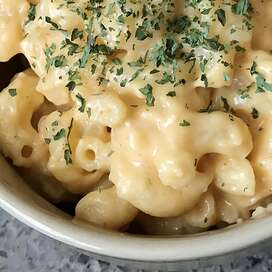

Mac and Cheese

Ingredients
- 1 (8 Ounce) Box Macaroni Pasta
- 1/4 Cup Butter
- 1/4 Cup All-Purpose Flour
- 1/2 TSP Salt
- 2 Cups Milk
- 2 Cups Shredded Cheddar Cheese
Directions
-
Bring a large pot of lightly salted water to a boil. Cook elbow macaroni
in the boiling water, stirring occasionally until cooked through but
firm to the bite, 8 minutes. Drain.
-
Melt butter in a saucepan over medium heat; stir in flour, salt, and
pepper until smooth, about 5 minutes. Slowly pour milk into butter-flour
mixture while continuously stirring until mixture is smooth and
bubbling, about 5 minutes. Add Cheddar cheese to milk mixture and stir
until cheese is melted, 2 to 4 minutes.
- Fold macaroni into cheese sauce until coated.